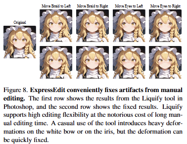

ExpressEdit generates diverse stylized expressions from both multi-word descriptions and emoticons.
Fast Editing of Stylized Facial Expressions with Diffusion Models in Photoshop
ExpressEdit is a free, open-source Photoshop plugin for editing stylized facial expressions on illustrated characters, powered by the SPICE backend and a database of 135 expression tags.
ExpressEdit generates diverse stylized expressions from both multi-word descriptions and emoticons.
ExpressEdit includes 135 curated Danbooru expression tags, each enriched with definitions, alternative tags in Japanese, Chinese, and Korean, example images, and multilingual stories. Use the RAG demo to find the right tag from a free-form story.

The prompt generator converts a story into an expression tag via retrieval-augmented generation.
Proprietary models introduce global noise with every edit, accumulating corruption over multiple steps. ExpressEdit only modifies the selected region.

Baseline models introduce destructive noise after each editing step. ExpressEdit produces clean, non-destructive results.
Baseline models fail to follow precise numeric instructions. With ExpressEdit, native Photoshop operations serve as hints to the diffusion model, enabling pixel-level control.

Reducing iris diameter by 50% and preserving contour sharpness. All baseline models fail on these tasks.
Casual use of Photoshop's Liquify tool leaves heavy deformation artifacts. ExpressEdit automatically repairs these into natural results.

Extreme distortions from Liquify are repaired into natural expressions by ExpressEdit.
Selection-based editing allows ExpressEdit to operate on high-resolution images without quality loss.

Editing a 1664x2432 image. Nano Banana 2 Pro produces blurry contours and reduced saturation; ExpressEdit preserves sharp details.
| Method | Latency (seconds) |
|---|---|
| FLUX.2 [max] | 49.94 ± 13.39 |
| GPT | 46.01 ± 11.74 |
| Nano Banana 2 Pro | 41.92 ± 22.08 |
| Nano Banana 2 Fast | 23.18 ± 3.92 |
| Grok | 7.11 ± 0.50 |
| ExpressEdit (30 steps) | 4.06 ± 0.02 |
| ExpressEdit + Speed-Up LoRA (8 steps) | 2.18 ± 0.02 |
Single NVIDIA RTX 4090, 1024x1024 images, mean ± std over 10 runs.

The speed-up LoRA cuts latency by 46% with negligible impact on detail quality.

Original, optional transformation, selection, and generated result.
For installation and setup, see the GitHub repository.
@article{tang2026expressedit, title = {ExpressEdit: Fast Editing of Stylized Facial Expressions with Diffusion Models in Photoshop}, author = {Tang, Kenan and Guo, Jiasheng and Lin, Jeffrey and Qin, Yao}, journal = {arXiv preprint arXiv:2604.03448}, year = {2026} }